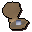
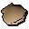

Oyster pearl

| Config name | smalloysterpearls |
| Item id | 411 |
| Value | 112 gp |
| Weight | 2g |
| Members | Yes |
| Tradeable | Yes |
| Stackable | No |
| Defined in | scripts/skill_fishing/configs/fishing.obj |
Oyster pearl
I could work wonders with a chisel on this pearl.
How to make
| Skill | Level | XP | Ingredients | Tool | How | Where | Makes |
|---|---|---|---|---|---|---|---|
| None | 1 |  Oyster | click in pack | 1 25 in 32 shells hold a pearl; the rest give oysterempty |
Used to make
| Skill | Level | XP | Ingredients | Tool | How | Where | Makes |
|---|---|---|---|---|---|---|---|
| Fletching | 41 | 3.2 | Oyster pearl | use on item | Pearl bolttips ×6 |
Referenced in scripts
scripts/skill_crafting/scripts/gem/uncut_gem.rs2scripts/skill_fishing/scripts/fishing_spots/memberfish.rs2